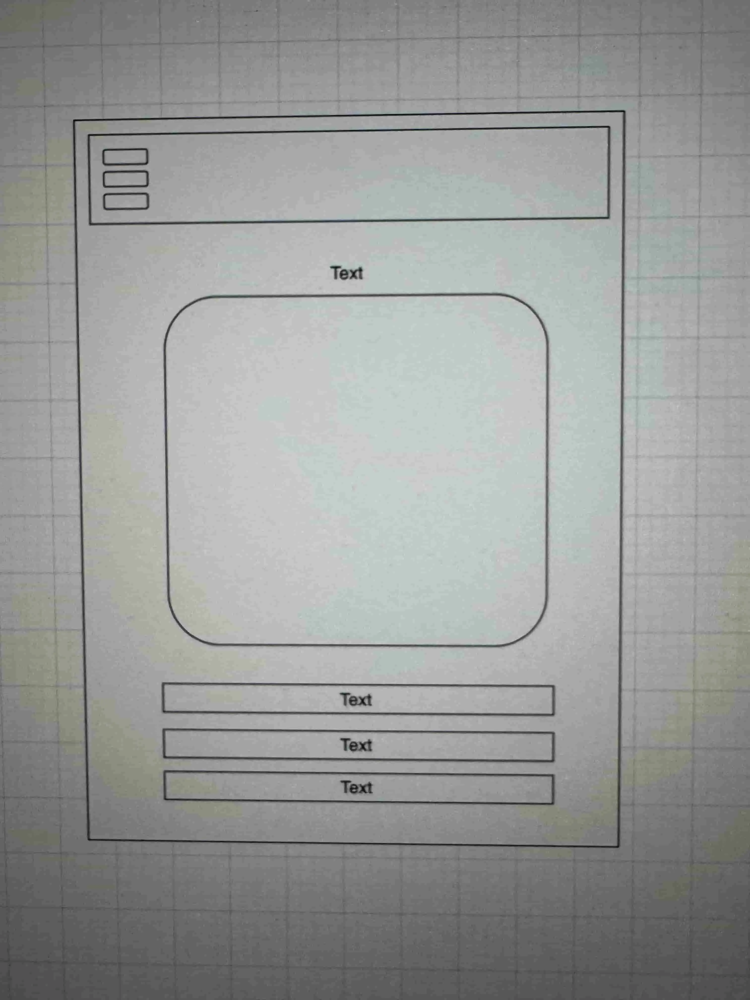
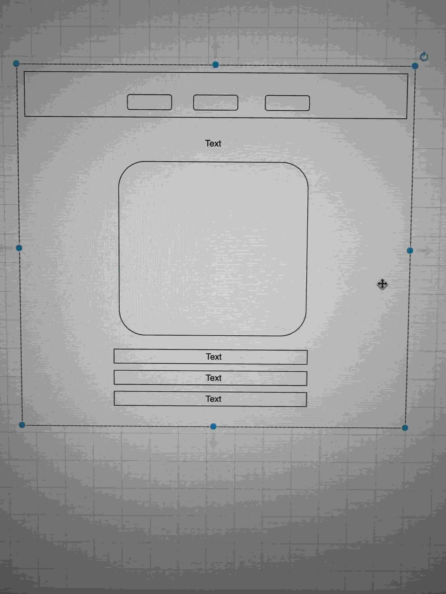

Name: Pokédex Web App
Reason: The name "Pokédex Web App" was selected because it clearly indicates the purpose of the site as a web-based application for exploring Pokémon data. It's straightforward, memorable, and directly related to the Pokémon franchise.
This website will serve as a modern Pokédex that allows users to browse, search, and explore Pokémon by name, type, and generation. It will offer descriptions, base stats, evolutions, and artwork for each Pokémon. The site may later include interactive features like favorite lists or comparison tools.
Mobile View:
Desktop View:
